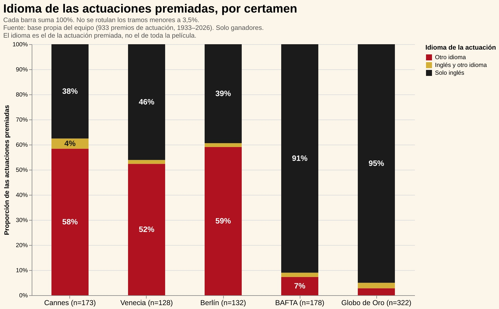
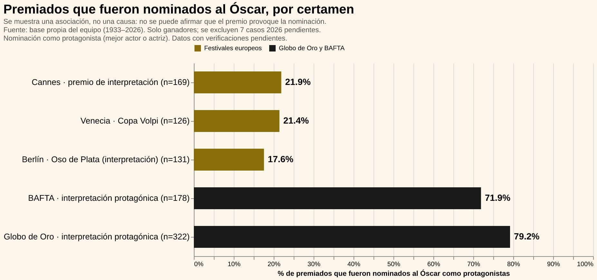

(Insertar aquí el video compilado de Jessie Buckley recibiendo el Globo de Oro, el BAFTA y el Óscar)
En la pantalla, el recorrido de Jessie Buckley parece la historia perfecta de un triunfo sin fisuras. En una misma temporada, la actriz irlandesa encadena los tres grandes galardones de la industria: el Globo de Oro, el BAFTA y la estatuilla dorada de la Academia como Mejor Actriz.
Sin embargo, detrás de la imagen de una actriz internacional conquistando los tres escenarios más codiciados del cine, la evidencia cuantitativa abre el debate: ¿funcionan los festivales internacionales como el trampolín real de los actores extranjeros hacia el Óscar?
A primera vista, triunfar en los festivales continentales europeos parece el salto natural de validación artística antes de llegar a la Academia. Sin embargo, la distribución por idioma en los certámenes continentales revela una realidad muy distinta a la de la temporada de premios anglosajona.

En Cannes (58%), Berlín (59%) y Venecia (52%), más de la mitad de las actuaciones premiadas son en un idioma distinto al inglés. Pero solo cerca de dos de cada diez de esos intérpretes galardonados en Europa logra cruzar la "aduana" y ser nominado al Óscar como protagonista:

En contraste, el camino que recorrió Buckley a través del Globo de Oro (donde el 79,2% de los premiados llega a la nominación del Óscar) y de los BAFTA (71,9%) funciona con una lógica opuesta y abrumadoramente anglófona: el 95% de las actuaciones premiadas en el Globo de Oro y el 91% en los BAFTA fueron interpretadas en inglés. Más que una casualidad, estos premios actúan como la verdadera antesala y filtro comercial de la Academia.
Casos como el de Buckley muestran que, aunque en los Globos de Oro y los BAFTA los galardonados no estadounidenses representan entre el 41% y el 48%, la diversidad geográfica es engañosa. De esos 211 premiados extranjeros, 189 actuaron en inglés. Además, entre quienes dieron el salto a la nominación del Óscar como protagonistas, 101 de los 187 intérpretes son británicos.
Cuando un actor trabaja en inglés y proviene del circuito de Hollywood, la probabilidad de ser nominado al Óscar es prácticamente simétrica: 72% para estadounidenses y 74% para extranjeros. Pero cuando la actuación es en otro idioma y el intérprete no cuenta con trayectoria previa en la industria norteamericana, la probabilidad cae drásticamente al 8%. En esta estructura, el idioma y el mercado de origen pesan mucho más que el pasaporte.
Hasta 1959, ningún nominado al Óscar como protagonista había actuado en un idioma distinto al inglés. Entre 2000 y 2026, la cifra apenas bordea el 10%, apoyada en excepciones contadas como Marion Cotillard, Penélope Cruz, Javier Bardem y Fernanda Torres.
El circuito de la "triple corona" que logró Buckley es un privilegio reservado casi en su totalidad para el cine anglófono. Casos como el de Jean Dujardin —quien ganó en Cannes (2011) con The Artist y luego se quedó con el Globo de Oro, el BAFTA y el Óscar— son anomalías históricas dentro de una base donde solo 4 de los 22 premios otorgados fuera del inglés por los BAFTA y Globos de Oro lograron duplicarse en la Academia.
El recorrido perfecto de Jessie Buckley en las pantallas y premiaciones no es la regla de la inclusión, sino el modelo de asimilación perfecta.
Aunque la proporción de extranjeros entre los nominados al Óscar subió del 37% (hasta 1999) al 45% (2000–2026), más de la mitad de esa cuota sigue perteneciendo a intérpretes británicos. Al mismo tiempo, los nominados que llegan a la gala sin una carrera previa consolidada en Hollywood cayeron del 23% al 13% en las últimas dos décadas. La victoria deslumbrante de la triple corona demuestra que la puerta de Hollywood no se abre por simple presencia internacional, sino bajo el estricto cumplimiento del idioma, el financiamiento y la industria anglosajona.
Nota: La base solo incluye ganadores, mide nacionalidad (no lugar de nacimiento) y excluye 7 casos de 2026 con Óscar pendiente. Hay datos por verificar.